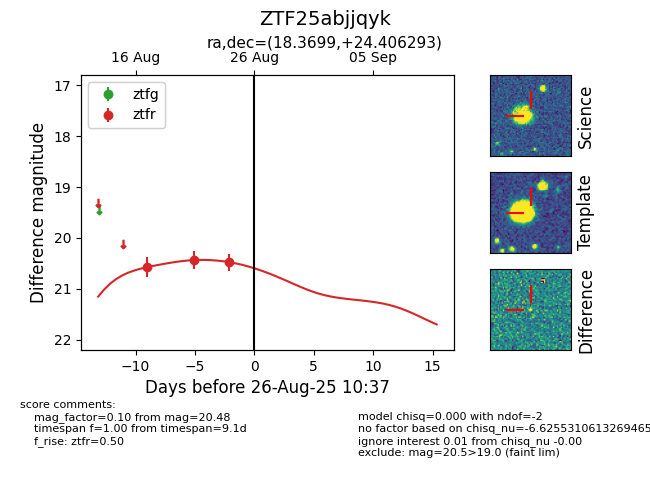

Target ZTF25abjjqyk at 2025-08-26 10:37, see:
FINK: fink-portal.org/ZTF25abjjqyk
Lasair: lasair-ztf.lsst.ac.uk/objects/ZTF25abjjqyk
ALeRCE: alerce.online/object/ZTF25abjjqyk
alt names
ZTF25abjjqyk (ztf,fink)
coordinates:
equatorial (ra, dec) = (18.3699,+24.40629)
galactic (l, b) = (129.3200,-38.19190)
photometry
last ztfr=20.48
3 ztfr detections
